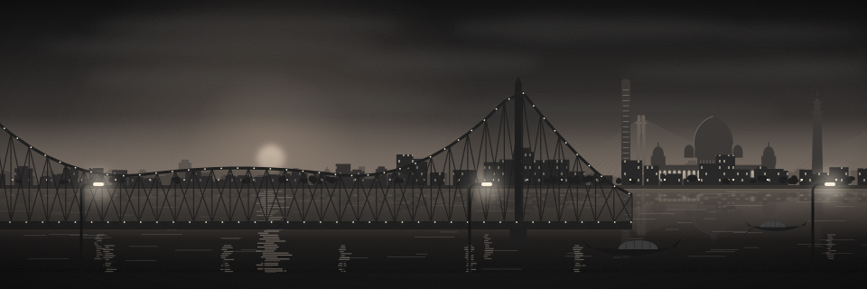
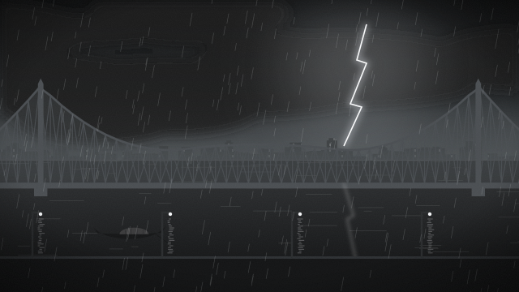
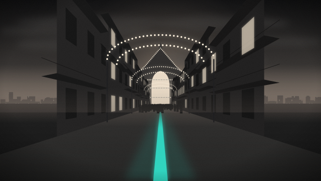

Howrah Bridge, folded into an S.
One chamfered stroke drawn as the bridge reads from the top: the anchor arm, the first tower, the suspended span, the second tower, the far anchor arm. The three bars are Warren-truss spans between two chords; the two bends are solid towers; the free ends close with an end post. At 32 px and below the solid S stands in, so the counters stay open at 16 px.
Stacked (night, paper) · app icon 128 · mark 64 / 40 · solid 32 · favicon 32 / 16 · paper mark
Meaning colours stay the console's: orange decide · red alert · green ok · teal route · blue #276EF1 links and AI. The yellow is never one of them.
Wordmark outlined from Inter 700 and Noto Sans Bengali 700 (both SIL OFL 1.1); interface type Inter and Noto Sans Bengali.

Home scene · the Hooghly at dusk

Key art · storm over Howrah Bridge

Key art · Puja route, light gates
Studio shot · yellow Ambassador taxi